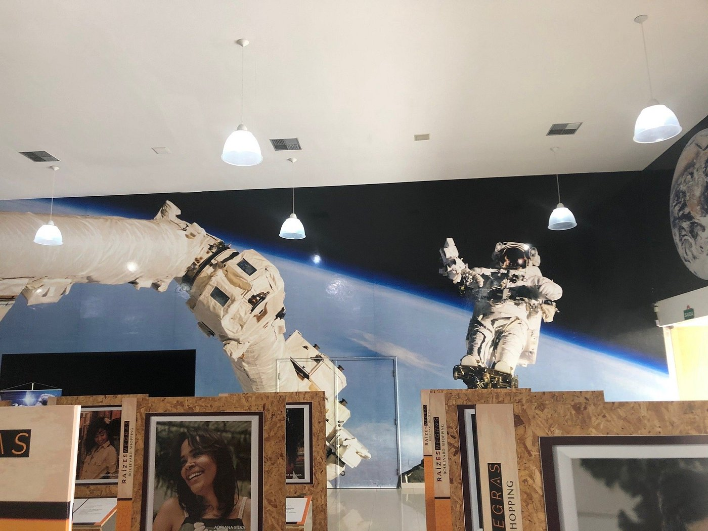
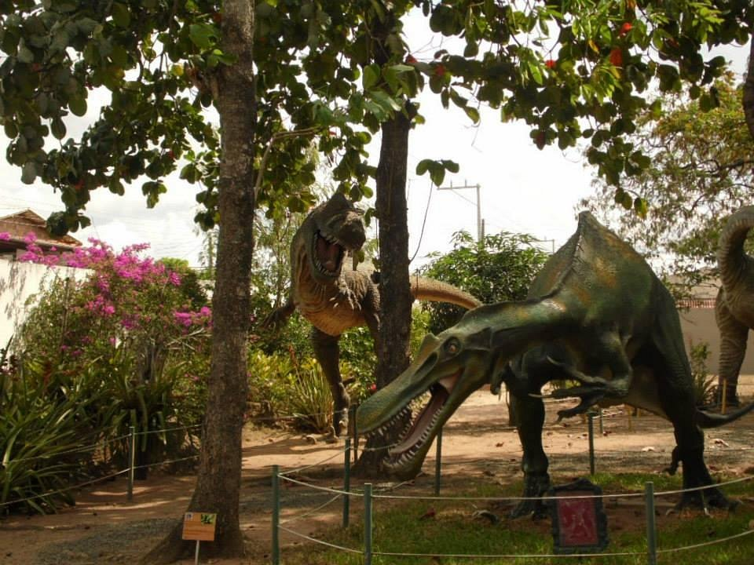
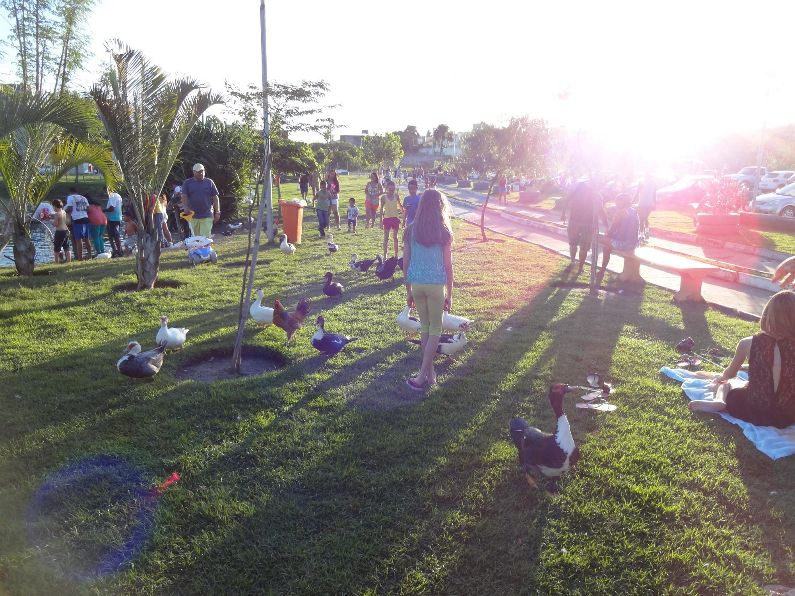

sua proxima viagem
Conheca Feira de Santana
Feira, como comumente é apelidada, é o segundo município mais populoso da Bahia e o primeiro do interior nordestino, ou seja, é o maior município em população do interior das regiões Norte, Nordeste, Centro Oeste e Sul do Brasil
para os amantes de historia
Veja 3 destinos de destaque em Feira de Santana
As atracoes de feira variam desde parques a museus culturais da cidade e igrejas
1 - Museu parque do saber
Sua estrutura física conta com amplo estacionamento, segurança física e eletrônica, um foyer para apresentação de exposições, concertos, congressos, teleconferências e performances teatrais entre outras.
Bom para:- Historia
2 - Observatorio Astronomico Antares
O Observatório Astronômico Antares é um observatório astronômico em Feira de Santana, Bahia[1], fundado em 1971 por Augusto César Pereira Orrico e anexado à Universidade Estadual de Feira de Santana em 1992. Entre seus setores, encontram-se a Biblioteca Setorial Observatório Astronômico Antares, inaugurada em 1997, parte integrante da biblioteca central da universidade e especializada em títulos de astronomia e física
Bom para:- Historia
3 - Parque Municipal Erivaldo Cerqueira
Além da arborização, no parque os animais também tem uma posição de destaque. Vivem submersos, outros vagando e também aqueles que estão quase sempre escondidos no extenso espaço verde de sua vegetação. São os cágados, preás e coelhos, além de patos, gansos, peixes, galinhas e iguanas
Bom para:- Casais
- Familia
- Orcamento